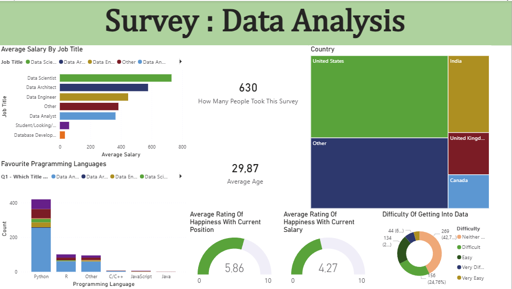

Power BI Projects
Interactive dashboards created using Power BI, focusing on data transformation, visualisation, and extracting insights from datasets.
Survey Data Analysis

Download the files
Survey Data Analysis Power BI Zip FilesThis project analysed real survey data collected from approximately 630 data professionals through social media platforms. The dataset explores career information within the data industry, including job roles, salaries, programming language preferences, geographical distribution, and job satisfaction.
The raw survey data was transformed using Power Query Editor and analysed in Power BI through the development of an interactive dashboard.
Credits for the dataset and project inspiration go to Alex The Analyst.
The data preparation process included:
- Removing unnecessary columns with no analytical value (Browser, OS, City, and Country reference fields)
- Standardising categorical responses such as job roles, industries, countries, and programming language entries
- Cleaning “Other” responses by splitting text values using delimiters and restructuring inconsistent entries
- Transforming salary data by splitting salary ranges into minimum and maximum values, then calculating an average salary column
- Removing redundant salary range columns after deriving the average salary
- Validating and correcting data types before loading the dataset into Power BI
The Power BI dashboard was designed to provide an interactive analysis of the dataset through multiple visualisations.
Key dashboard components included:
- Cards displaying total survey participants, average age of respondents, and average salary by job title
- Comparison of average salaries across different data-related roles
- Analysis of programming language preferences among respondents
- Geographical distribution of survey participants across countries
- Gauge charts measuring job satisfaction, including happiness with current position and salary satisfaction
- A donut chart showing perceived difficulty of entering the data field
The dashboard was structured to provide an interactive and user-friendly experience for exploring insights from the dataset.
Key insights from the analysis included:
- Analysis of 630 respondents working within or interested in the data industry
- Data Scientists recorded the highest average salary, followed by Data Architects and Data Engineers
- Python was the most commonly preferred programming language among respondents
- The United States had the highest representation of respondents, followed by India and the United Kingdom
- Average job satisfaction was approximately 5.86/10, while salary satisfaction was lower at 4.27/10
- Responses regarding entry difficulty into the data field varied widely, ranging from easy to very difficult
Potential improvements for future analysis include:
- Further standardisation of categorical responses for improved consistency across the dataset
- Development of additional DAX measures for deeper analytical insights
- More detailed comparisons between job roles, salaries, and geographic locations
- Additional interactive filters to enhance user exploration of the dashboard